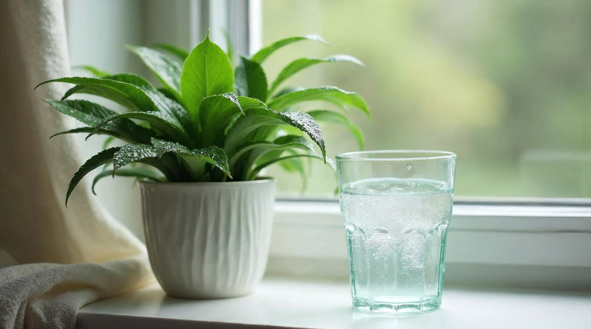
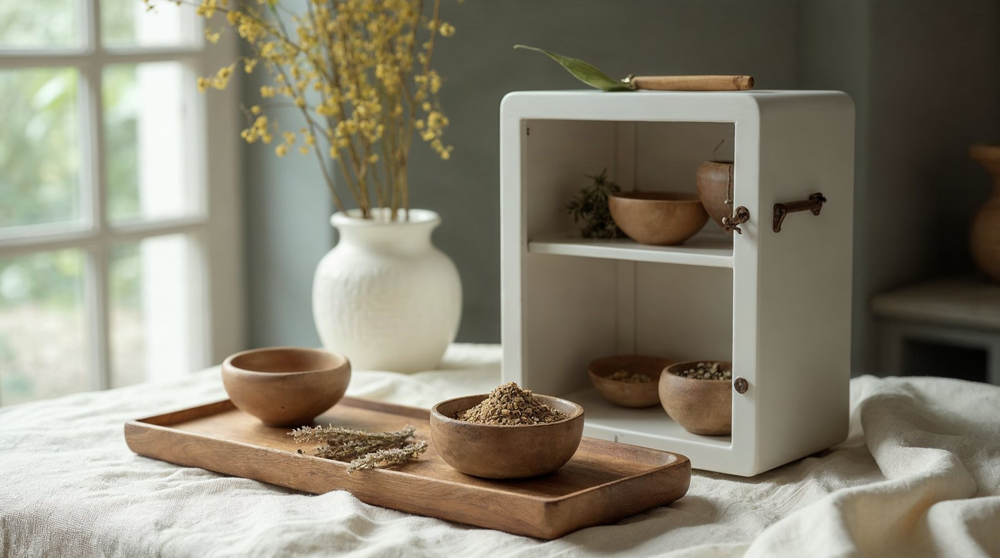
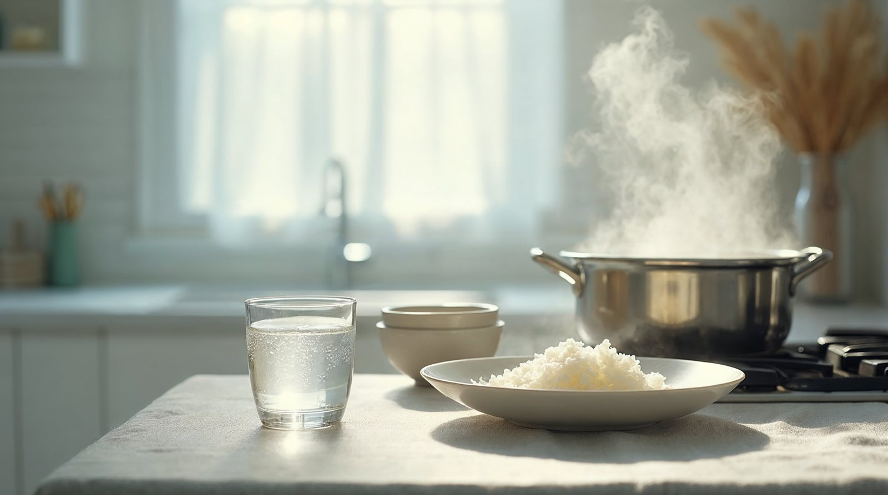

이종호 한의사 감수좋은꿈참사랑한의원 대표원장 (한의사 면허번호 19769)발행 2026-11-26 · 수정 2026-11-27
이 글의 차례
오후 세 시, 모니터 앞에서 눈을 몇 번이고 꾹 감았다 뜨세요. 인공눈물을 넣어도 잠깐뿐이고, 물병은 벌써 두 번째예요. 점심에 먹은 밥이 목에 걸리는 듯해서 국물 없이는 넘기기 어려웠고요. 눈도 입도 바싹 마른 하루가 며칠째 이어집니다.
진료실에서 "눈이 마른 건 안과에, 입이 마른 건 치과에 물어봤는데 둘이 같이 오는 건 어디에 물어야 할지 모르겠어요"라는 말씀을 종종 들어요. 그 마음 잘 알아요. 두 군데가 함께 마르면, 따로 볼 때와는 다른 이유를 찾아봐야 하는 경우가 있거든요.
눈과 입이 함께 마르는 데에는 여러 갈래의 이유가 있어요. 드시는 약 때문일 수도 있고, 갱년기의 변화일 수도 있고, 잠자는 동안 입을 벌리고 자는 습관 때문일 수도 있어요. 드물지만 쇼그렌 증후군처럼 눈물샘과 침샘이 함께 영향을 받는 병도 있고요.
그래서 저는 질문을 바꿔서 봐요. '어디가 마르나'와 '왜 함께 마르나'는 다른 얘기거든요. 앞의 질문은 눈과 입을 따로 보게 하고, 뒤의 질문은 몸 전체를 보게 해요. 이 글에서는 그 이유를 하나씩 나눠 보고, 일상에서 해 볼 수 있는 것과 한의원에서 함께 살피는 점을 정리했어요.

눈물과 침은 어떻게 만들어지나요
눈물은 눈꺼풀 안쪽과 눈 바깥 위쪽에 있는 샘에서, 침은 귀 앞쪽과 턱 아래, 혀 밑에 있는 샘에서 만들어집니다. 둘 다 자율신경의 지시를 받아 양이 조절됩니다. 마음이 편하고 몸이 쉬는 상태일 때 잘 나오고, 긴장하고 쫓길 때는 줄어드는 경향이 있습니다.
눈물은 물만 있는 것이 아니라 기름층과 점액층이 함께 얇은 막을 이룹니다. 기름층이 부족하면 눈물이 금방 날아가서, 눈물 양이 충분해도 뻑뻑하게 느껴질 수 있습니다. 침도 끈적한 성분과 묽은 성분이 섞여 있어서 양뿐 아니라 질도 함께 봐야 합니다.
이렇게 눈물과 침은 같은 신경의 지시를 받고, 비슷한 환경에 영향을 받습니다. 그래서 한쪽이 마르는 이유가 다른 쪽에도 같이 작용하는 경우가 많습니다.
왜 눈과 입이 함께 마를까요
진료실에서 자주 보는 이유를 나눠 보면 다음과 같습니다. 한 가지만 있는 경우보다 두세 가지가 겹쳐 있는 경우가 더 많습니다.
- 드시는 약: 콧물·알레르기 약, 일부 혈압약과 이뇨제, 수면제나 기분을 돕는 약, 방광을 진정시키는 약 등
- 갱년기 변화: 호르몬이 줄면서 눈, 입, 피부, 질이 함께 마르기 쉬움
- 잠과 호흡: 코막힘이나 코골이로 입을 벌리고 자는 습관
- 환경: 난방, 에어컨, 바람, 오랜 화면 보기
- 생활: 물을 적게 마시거나 커피와 술을 자주 드시는 경우
- 몸의 병: 쇼그렌 증후군, 당뇨, 갑상선 질환 등
이 가운데 약은 가장 먼저 살펴보는 부분입니다. 한 가지 약은 괜찮아도 비슷한 작용의 약을 여러 개 드시면 마름이 더 커질 수 있습니다. 다만 마른다고 해서 혼자 약을 끊지 마시고, 처방한 선생님께 증상을 알리고 상의해 주세요.
쇼그렌 증후군은 언제 떠올려 볼까요?
쇼그렌 증후군은 면역이 눈물샘과 침샘을 공격해 눈과 입이 함께 마르는 병입니다. 마름이 몇 달 이상 이어지고, 마른 음식을 물 없이 삼키기 어렵거나, 침샘이 있는 귀 앞이나 턱 아래가 붓는 일이 되풀이된다면 한 번쯤 떠올려 볼 만합니다.
여기에 관절 통증, 심한 피로, 손가락이 추위에 하얗게 변하는 모습이 함께 있다면 류마티스내과에서 확인을 받아 보시길 권합니다. 진단은 혈액 검사와 눈물·침 검사 등을 모아서 이루어집니다.
물론 눈과 입이 함께 마른다고 모두 쇼그렌 증후군은 아닙니다. 약이나 갱년기, 환경처럼 더 흔한 이유를 먼저 살펴보고, 그래도 설명이 되지 않거나 다른 증상이 겹칠 때 확인해 보는 순서가 자연스럽습니다.
갱년기와 잠, 두 갈래를 꼭 봅니다
갱년기에 들어서면 눈과 입뿐 아니라 피부와 질까지 함께 마르는 분이 많습니다. 얼굴로 열이 오르고 땀이 나며 잠이 얕아지는 모습이 같이 있다면 이 변화의 한 부분일 수 있습니다. 산부인과 상담과 함께 생활 리듬을 살피면 도움이 됩니다.
잠은 생각보다 큰 몫을 합니다. 코가 막혀 입을 벌리고 자면 밤새 입안이 마르고, 아침에 일어나면 목이 칼칼하고 혀가 갈라지는 느낌이 듭니다. 잠이 부족하면 눈물의 질도 떨어져서 다음 날 눈이 더 뻑뻑합니다.
밤에 자주 깨서 물을 마신다면 입을 벌리고 자는지 가족에게 물어보세요. 코막힘이 오래가면 이비인후과 확인을 함께 받아 보시는 것이 좋습니다.
긴장과 걱정도 입을 마르게 합니다
발표를 앞두고 입이 바싹 말랐던 경험이 한 번쯤 있으실 겁니다. 몸이 긴장하면 침을 만드는 신경의 지시가 줄어들어 입이 마르고, 눈도 깜빡임이 줄어 뻑뻑해집니다. 이런 상태가 하루 이틀이 아니라 몇 주씩 이어지면 마름도 함께 길어질 수 있습니다.
일이 몰리는 시기, 잠을 설치는 시기에 마름이 심해졌다면 몸의 긴장을 함께 돌봐 주세요. 잠들기 전 몇 분 동안 내쉬는 숨을 길게 하는 호흡, 점심 뒤 짧은 산책처럼 작은 쉼을 하루 사이사이에 넣는 것만으로도 몸이 한결 느슨해질 수 있습니다.

한의학에서는 이렇게 나눠 봅니다
한의학에서는 몸을 적시는 진액이 부족해진 상태를 음허, 열이 위로 떠서 위쪽이 마르는 상태를 허열이 오른다고 표현하기도 합니다. 손발바닥이 화끈거리고 오후에 얼굴이 달아오르며 잠이 얕은 모습이 함께 있다면 이 방향으로 봅니다.
반대로 피로가 크고 소화가 약하며 몸이 무거운데 입이 마르는 분도 있습니다. 이런 분은 진액을 만들고 돌리는 힘이 처진 상태로 보고, 소화와 기운을 함께 살핍니다. 같은 마름이라도 몸의 바탕에 따라 생활에서 챙길 부분이 달라집니다.
이런 분류는 병원의 진단명을 대신하는 것이 아닙니다. 검사로 확인할 부분은 해당 과에서 확인하고, 한의원에서는 몸 전체의 흐름을 함께 들여다보는 참고로 씁니다.
눈과 입 말고도 마르는 곳이 있나요?
눈과 입이 마른다고 오신 분께 여쭤 보면, 코 안이 말라 딱지가 잘 앉거나, 목이 칼칼하고 마른기침이 나거나, 피부가 유난히 당긴다고 말씀하시는 경우가 많습니다. 여성분은 질 건조함을 함께 느끼시기도 합니다.
이렇게 여러 곳이 함께 마른다면 몸 전체의 흐름에서 이유를 찾아볼 필요가 커집니다. 갱년기 변화, 드시는 약, 쇼그렌 증후군 같은 병이 대표적으로 여러 곳을 함께 마르게 합니다. 반대로 눈과 입만 마르고 다른 곳은 괜찮다면 화면 보기나 입을 벌리고 자는 습관처럼 생활의 이유가 더 클 수 있습니다.
말씀하기 쑥스러운 부위라도 함께 마르는 곳이 있다면 알려 주세요. 전체 그림을 보는 데 도움이 되고, 필요하면 해당 과 진료를 함께 안내해 드립니다.
계절과 나이에 따라 달라지는 마름
겨울에는 바깥 공기가 차고 건조한 데다 실내 난방까지 더해져 눈과 입이 한꺼번에 마르기 쉽습니다. 여름에는 에어컨 바람과 땀으로 빠져나간 물이 마름을 키웁니다. 같은 사람이라도 계절에 따라 불편의 크기가 달라지는 이유입니다.
나이가 들면 눈물과 침을 만드는 샘의 힘이 조금씩 줄고, 드시는 약의 가짓수도 늘어나면서 마름을 호소하는 분이 많아집니다. 어르신은 입이 마르면 틀니가 잘 맞지 않거나 음식 맛이 덜 느껴져서 식사량이 줄기도 하니, 가족분들이 함께 살펴 주시면 좋습니다.
먼저 이렇게 여쭙니다
처음 오시면 저는 대략 이런 순서로 여쭙니다. 미리 생각해 오시면 이야기가 훨씬 수월해집니다.
- 눈과 입이 마르기 시작한 지 얼마나 되었나요? 어느 쪽이 먼저였나요?
- 하루 중 언제 가장 심한가요? 아침에 일어났을 때인가요, 오후인가요?
- 지금 드시는 약과 영양제, 최근에 새로 시작한 약이 있나요?
- 코막힘이나 코골이, 입을 벌리고 잔다는 말을 들은 적이 있나요?
- 얼굴로 오르는 열감, 땀, 생리 주기 변화가 있나요?
- 관절 통증, 심한 피로, 귀 앞이나 턱 아래 붓기가 있었나요?
모든 질문에 정확히 답하지 못하셔도 괜찮습니다. 약 봉투 하나와 '언제 가장 마른지'만 알려 주셔도 이야기의 방향이 잡힙니다.

일상에서 먼저 해 볼 수 있는 것
건조함은 한 번에 해결하기보다 하루 곳곳에서 조금씩 덜어 내는 방식이 잘 맞습니다. 지금 가장 불편한 때를 하나 골라 그 시간부터 바꿔 보세요.
- 물병을 곁에 두고 한 번에 많이보다 조금씩 자주 마시기
- 실내 습도를 적당히 유지하고 난방기 바람이 얼굴에 직접 닿지 않게 하기
- 화면을 볼 때 20분마다 먼 곳을 보며 천천히 눈 깜빡이기
- 커피와 술은 양과 횟수를 조금씩 줄이기
- 식사 때 꼭꼭 오래 씹어 침이 나오게 하기
- 잠들기 전 코를 편하게 하고 옆으로 누워 자 보기
따뜻한 수건을 눈 위에 몇 분 올려 두면 눈꺼풀의 기름샘이 부드러워져 눈물막이 고르게 퍼지는 데 도움이 될 수 있습니다. 너무 뜨겁지 않게, 손등에 대 보아 기분 좋게 따뜻한 정도면 충분합니다.
입이 마를 때는 단 사탕보다 무설탕 껌이나 물로 입안을 적시는 편이 치아에 부담이 덜합니다. 입이 마르면 충치와 잇몸 문제가 생기기 쉬우니 치과 정기 점검도 함께 챙겨 주세요. 인공눈물이나 입안 보습제는 안과, 치과, 약국에서 상의해 고르시면 됩니다.
식사는 마른 음식만 드시기보다 국, 죽, 나물처럼 촉촉한 반찬을 곁들이시면 삼키기가 한결 편합니다. 맵고 짠 음식은 입안을 더 마르게 할 수 있어서 조금 줄여 보세요.
한의원에서 함께 살필 수 있는 경우
- 검사에서 큰 이상은 없다는데 눈과 입이 함께 마르는 경우
- 갱년기 무렵 열감, 땀, 얕은 잠과 함께 마름이 심해진 경우
- 손발바닥이 화끈거리고 오후에 얼굴이 달아오르는 경우
- 피로가 크고 소화가 약하며 입이 마르는 경우
- 쇼그렌 증후군으로 치료 중이면서 피로나 잠 문제가 이어지는 경우
좋은꿈참사랑한의원에 오시면 먼저 아래 '먼저 확인이 필요한' 신호가 없는지부터 봅니다. 그다음 맥을 짚고 혀를 살피며, 잠과 땀, 소화, 대소변, 열감을 여쭙습니다. 드시는 약이 마름과 관련이 있어 보이면 처방한 선생님과 상의하시도록 안내합니다.
진찰한 내용을 바탕으로 생활에서 바꿔 볼 것 하나와 함께 한약 상담, 침 진료 가운데 지금 상태에 맞는 것을 정합니다. 한약을 상의할 때는 드시는 약을 모두 확인하고 신중하게 정합니다. 임신 중이거나 임신을 계획하신다면 먼저 알려 주시고 산부인과와도 상의해 주세요.
이렇게 기록해 오시면 상담이 쉬워집니다
건조함은 하루 안에서도 오르내림이 커서, 2주 정도 간단히 적어 오시면 이유를 찾는 데 큰 도움이 됩니다.
- 눈과 입이 가장 마른 시간대와 정도(0~10)
- 하루에 마신 물, 커피, 술의 양
- 잠든 시각과 깬 시각, 밤에 물을 마시러 깬 횟수
- 새로 시작했거나 바꾼 약
- 열감, 땀, 생리 주기 변화가 있었던 날
- 난방이나 에어컨을 오래 쓴 날
빠진 날이 있어도 괜찮습니다. 손으로 쓰기 번거로우시면 휴대전화 메모에 한 줄씩 남기셔도 충분합니다.
기록을 나란히 놓고 보면 마름이 심했던 날 앞에 잠이 짧았는지, 커피가 많았는지, 약이 바뀌었는지가 보이기 시작합니다. 그 연결 하나가 다음 걸음을 정하는 실마리가 됩니다.
촉촉한 하루를 위해
눈과 입이 함께 마르는 건 작아 보여도 하루의 질을 크게 흔들어요. 말할 때도, 먹을 때도, 화면을 볼 때도, 잠자리에 들 때도 하루 내내 신경이 쓰이니까요. 참고 지내기보다 이유를 하나씩 찾아보시길 권해요. 이유가 보이면 할 수 있는 일도 같이 보이기 시작하거든요.
몸 안쪽의 마름을 살피는 건 제가 할게요. 대신 하나만 부탁드려요. 책상 위에 물병 하나를 늘 두고, 한꺼번에 말고 조금씩 자주 입을 적셔 주세요. 딴 건 하시던 대로 편하게 하셔도 돼요.
마름은 세게 한 번 적신다고 달라지는 게 아니라서, 약하게 자주가 더 잘 맞는 경우가 많아요. 큰 컵 한 잔보다 한 모금씩 여러 번이 그래서 좋은 거예요.
다음에 오시면 2주 동안의 기록부터 함께 펼쳐 볼게요. 궁금한 건 그때 편하게 물어보세요.
이런 증상은 먼저 확인이 필요합니다
- 눈이 갑자기 붉고 아프면서 시력이 떨어지거나 빛이 몹시 부신 경우
- 갈증이 심해 물을 계속 찾고 소변이 크게 늘면서 체중이 빠르게 줄어드는 경우
이런 신호가 있으면 한의원보다 가까운 병원이나 응급실을 먼저 찾으세요.
함께 읽으면 좋은 글
- 물을 마셔도 입이 바싹 마르는 구강건조증은 어떻게 살피나요?
- 눈이 뻑뻑하고 모래가 들어간 듯 따갑거나 쉽게 피로한 안구건조증은 어떻게 살피나요?
- 갱년기 무렵 눈·입·피부가 부쩍 건조해졌을 때는 무엇을 살피나요?
- 밤만 되면 손바닥과 발바닥이 화끈거려 이불 밖으로 내놓게 되는 수족번열은 어떻게 살피나요?
- 류마티스 등 자가면역질환으로 치료 중일 때 근육통 한방 진료를 같이 받아도 되나요?

여쭙는 것
- 눈과 입이 마르기 시작한 지 얼마나 되었나요? 어느 쪽이 먼저였나요?
- 하루 중 언제 가장 심한가요? 아침에 일어났을 때인가요, 오후인가요?
- 지금 드시는 약과 영양제, 최근에 새로 시작한 약이 있나요?
생활에서 해 볼 것
- 물병을 곁에 두고 한 번에 많이보다 조금씩 자주 마시기
- 실내 습도를 적당히 유지하고 난방기 바람이 얼굴에 직접 닿지 않게 하기
- 화면을 볼 때 20분마다 먼 곳을 보며 천천히 눈 깜빡이기
한의원에서 함께 살필 것
- 검사에서 큰 이상은 없다는데 눈과 입이 함께 마르는 경우
- 갱년기 무렵 열감, 땀, 얕은 잠과 함께 마름이 심해진 경우
- 손발바닥이 화끈거리고 오후에 얼굴이 달아오르는 경우
먼저 확인이 필요한 신호
- 눈이 갑자기 붉고 아프면서 시력이 떨어지거나 빛이 몹시 부신 경우
- 갈증이 심해 물을 계속 찾고 소변이 크게 늘면서 체중이 빠르게 줄어드는 경우
한눈에 보는 표
| 구분 | 핵심 |
|---|---|
| 여쭙는 것 | 눈과 입이 마르기 시작한 지 얼마나 되었나요? 어느 쪽이 먼저였나요? 하루 중 언제 가장 심한가요? 아침에 일어났을 때인가요, 오후인가요? |
| 생활에서 해 볼 것 | 물병을 곁에 두고 한 번에 많이보다 조금씩 자주 마시기 실내 습도를 적당히 유지하고 난방기 바람이 얼굴에 직접 닿지 않게 하기 |
| 한의원에서 함께 살필 것 | 검사에서 큰 이상은 없다는데 눈과 입이 함께 마르는 경우 갱년기 무렵 열감, 땀, 얕은 잠과 함께 마름이 심해진 경우 |
| 먼저 확인이 필요한 신호 | 눈이 갑자기 붉고 아프면서 시력이 떨어지거나 빛이 몹시 부신 경우 갈증이 심해 물을 계속 찾고 소변이 크게 늘면서 체중이 빠르게 줄어드는 경우 |
자주 묻는 질문
눈과 입이 함께 마르면 쇼그렌 증후군인가요?
그렇지는 않습니다. 드시는 약, 갱년기, 입을 벌리고 자는 습관, 난방처럼 더 흔한 이유가 많습니다. 다만 몇 달 이상 이어지면서 관절 통증이나 침샘 붓기가 함께 있다면 류마티스내과에서 확인해 보시길 권합니다.
먹고 있는 약 때문에 마르는 것 같으면 끊어도 되나요?
혼자 끊지 마시고 처방한 선생님께 증상을 먼저 알려 주세요. 같은 효과를 내는 다른 약으로 바꾸거나 시간을 조정하는 방법이 있을 수 있습니다.
물을 많이 마시면 나아지나요?
한 번에 많이 마시면 소변으로 금방 빠져나가기 쉬워서, 조금씩 자주 드시는 편이 입안을 촉촉하게 지키는 데 도움이 될 수 있습니다. 커피와 술을 줄이는 것도 함께 해 보세요.
한약을 먹으면 침이나 눈물이 다시 나오나요?
결과를 미리 약속드리기는 어렵습니다. 진찰한 뒤 몸의 바탕에 맞춰 잠, 열감, 소화 같은 함께 있는 불편을 살피는 방향으로 상의하고, 드시는 약을 모두 확인해 신중하게 정합니다.
좋은꿈참사랑한의원은 재진 때 지난번 이야기부터 이어서 여쭙니다. 진료시간과 예약은 오시는 길에서 확인하세요.
어디서 상담받을 수 있나요?
좋은꿈참사랑한의원은 서울 동작구 만양로2길 2 신성빌딩 3층·5층(서울 동작구 상도동, 7호선 상도역 3번 출구 근처)에 있습니다. 한의사 3명(이종호 대표원장, 조영기 수석진료원장, 정원영 진료원장)이 진료합니다. 진료시간은 평일 09:30~20:00(점심 13:00~14:00), 토·일·공휴일 09:30~15:00이며, 방문 전 전화로 확인을 권합니다. 예약은 네이버 예약, 카카오톡 상담, 전화 02-815-7510로 받습니다.
이 글은 일반적인 건강 정보이며 개인의 진단이나 치료를 대신하지 않습니다. 증상이 있거나 복용 중인 약이 있다면 진료를 통해 확인하세요. 치료 효과는 개인마다 다를 수 있습니다.
작성 기준: 일반적으로 알려져 있는 건강 정보를 참고해 정리했습니다(대표원장 감수). 증상 기록은 1~2주 동안 하루 1회, 비슷한 시간에 적어 오시면 지난 상태와 비교하기 쉽습니다.